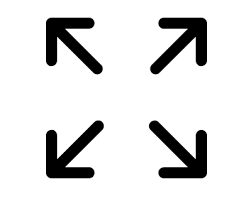

Mengenal Persamaan Kuadrat
Pernahkah kalian melihat orang bermain basket? bola basket yang dilemparkan ke dalam ring akan dibuat melambung agar dapat masuk kedalamnya bukan? Nah, itulah contoh persamaan kuadrat dalam kehidupan sehari-hari. Pada bab ini kita akan mempelajari bagaimana cara menyelesaikan persamaan kuadrat. Coba perhatikan video dibawah ini adalah bukti nyata persamaan kuadrat ada dalam kehidupan nyata.
Petunjuk Penggunaan Video
- Klik tombol untuk memulai video animasi.
- Klik tombol

memperbesar video animasi - Naikkan volume suara pada perangkat anda
Setelah menyaksikan video diatas, sudah terbayangkan apa itu persamaan kuadrat dan bagaimana contohnya dalam kehidupan sehari-hari. Selanjutnya kita akan mempelajari pengertian dan bentuk umum dari persamaan kuadrat.
*Klik tombol Selanjutnya di bawah ini untuk melanjutkan materi